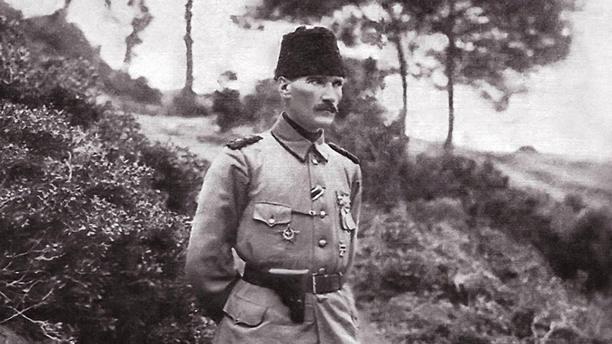

Mustafa Kemal Atatürk

Mustafa Kemal Atatürk Çanakkale Cephesinde
Atatürk’ün hayatı kısaca maddeler halinde makalemizde liste halinde açıklanmıştır. Hayatı kahramanlıklar ile geçmiş destansı bir yaşamı özetlemek bizim için biraz zor olacak ama umarım faydalı olur.
Atatürk'ün hayatı hakkında detaylı bilgi almak istiyorsanız bu linke tıklayabilirsiniz.- 1881 yılında: Mustafa Kemal Selanik’te doğdu
- 1893 yılında: Askeri Rüştiye okuluna girdi ve hocası tarafından da Kemal adını aldı.
- 1895 yılında: Selanik Askeri Rüştiye okulunu bitirdi. Ardından Manastır Askeri İdadisi okuluna girdi.
- 13 Mart 1899 : İstanbul Harp Okulu Piyade sınıfına girdi.
- 1902 yılında: Harp Akademisi okuluna girdi. Daha sonra bu yerde gazete çıkardı.
- 11 Ocak 1905 : Harp Akademisi okulunu Yüzbaşı olarak bitirdi. Ardından Şam’a 5. Ordu’nun 30. Süvari Alayı’nda staj yapmak için atandı.
- 1906 yılında: Şam vilayetinde Vatan ve Hürriyet Cemiyeti’ni kurdu. Ardından Şam’da topçu stajını yaptı. Burada Kolağası oldu.
- 23 Temmuz 1908 : Meşrutiyet’in ilan edilmesi için çalışmalar başlandı.
- 31 Mart 1909 : 31 Mart ihtilalinde Hareket Ordusu Kurmay Subayı olarak bulundu.
- 13 Eylül 1911 : Mustafa Kemal, İstanbul’a Genelkurmaylığa atandı.
- 27 Kasım 1911 : Mustafa Kemal, Binbaşılığa yükseldi.
- 9 Ocak 1912 : Mustafa Kemal, Trablusgarp savaşında oradaki Tobruk saldırısını yönetti.
- 27 Ekim 1913 : Mustafa Kemal, Sofya Ateşemiliterliği olarak atandı.
- 1 Mart 1914 : Mustafa Kemal, Yarbay olarak rütbesi yükseltildi.
- 2 Şubat 1915 : Mustafa Kemal, Tekirdağ’da 19. Tümeni kurdu.
- 25 Şubat 1915 : Mustafa Kemal’in MAYDOS tarafına gitti.
- 25 Nisan 1915 : Mustafa Kemal, Arıburnu’nda İtilaf Devletleri’ne karşı koyması.
- 1 Haziran 1915 : Mustafa Kemal Albaylığa terfi etmiştir.
- 9 Ağustos 1915 : Mustafa Kemal, Anafartalar Grup Komutanlığı birliğine atandı.
- 10 Ağustos 1915 : Mustafa Kemal, Anafartalar’da düşmanı geri püskürttü.
- 1 Nisan 1916 : Mustafa Kemal Tuğgeneralliğe yükseldi.
- 6 Ağustos 1916 : Mustafa Kemal, Muş ve Bitlis illerini düşmandan kurtardı.
- 20 Eylül 1917 : Mustafa Kemal, illerin ve ordunun durumunu açıklayan raporları yazdı.
- 26 Ekim 1918 : Mustafa Kemal, Halep’in kuzeyinde düşman saldırılarını önledi.
- 31 Ekim 1918 : Mustafa Kemal Yıldırım Orduları Grup Komutanlığı’na atandı.
- 13 Kasım 1918 : Yıldırım Orduları Grup Komutanlığı kaldırıldı. Ayrıca Mustafa Kemal İstanbul’a döndü.
- 30 Nisan 1919 : Mustafa Kemal Erzurum’da bulunan 9. Ordu Müfettişliği’ne atandı.
- 15 Mayıs 1919 : İzmir’e Yunanlılar asker çıkardı.
- 19 Mayıs 1919 : Mustafa Kemal Samsun’a çıktı.
- 15 Haziran 1919 : Mustafa Kemal, 3. Ordu Müfettişi ünvanını aldı.
- 21 Haziran 1919 : Mustafa Kemal, Dünya güçlerini Sivas Kongresi’ne çağırdı.
- 8 Temmuz 1919 : Saat 20:50’de Mustafa Kemal askerlikten ayrıldı.
- 22 Ekim 1919 : Amasya Protokolü’nün imzalanması.
- 7 Kasım 1919 : Mustafa Kemal, Erzurum’dan milletvekili seçildi.
- 20 Mart 1920 : İstanbul’un İtilaf Devletleri tarafından ele geçirilmesi. Daha sonra Mustafa Kemal’in protestosu, Ankara’da yeni bir Millet Meclisi toplama girişimi.
- 18 Mart 1920 : İstanbul’da Meclis-i Mebusan’ın son toplantısı oldu.
- 23 Nisan 1920 : Mustafa Kemal, Ankara’da TBMM’yi açtı.
- 24 Nisan 1920 : Mustafa Kemal, TBMM başkanı seçildi.
- 11 Mayıs 1920 : Mustafa Kemal’e, İstanbul Hükümeti tarafından idam emri çıkarıldı.
- 24 Mayıs 1920 : Mustafa Kemal’in idamı Padişah tarafından onaylandı.
- 10 Ağustos 1920 : Osmanlı İmparatorluğu ile İtilaf Devletleri arasında Sevr Antlaşması’nın imzalanması.
- 9 Ocak 1920 : I.İnönü savaşı.
- 20 Ocak 1921 : Teşkilat-ı Esasiye Kanunu’nun esas maddelerinin kabulü. ”Anayasa”
- 30 Mart 1921 : II.İnönü Savaşı.
- 5 Ağustos 1921 : Mustafa Kemal’e Başkumandanlık görevinin verilmesi.
- 22 Ağustos 1921 : Mustafa Kemal kumandasında Sakarya Meydan Savaşı’nın başlaması.
- 13 Eylül 1921 : Sakarya Meydan Savaşı’nın kazanılması.
- 19 Eylül 1921 : Mustafa Kemal’e Mareşallik rütbesi verildi. Sonra Mustafa Kemal’in Gazi ünvanı aldı.
- 26 Ağustos 1922 : Gazi Mustafa Kemal Kocatepe’de Büyük Taarruz’u yönetmesi.
- 30 Ağustos 1922 : Gazi Mustafa Kemal’in Dumlupınar Başkumandanlık Meydan Savaşı’nı kazanması.
- 1 Eylül 1922 : “Ordular! İlk hedefiniz Akdeniz’dir, İleri !” sözünü söylemesi.
- 9 Eylül 1922 : Türk Ordusu İzmir’e girdi.
- 11 Ekim 1922 : Mudanya Mütarekesi’nin imzalandı.
- 1 Kasım 1922 : Saltanatın kaldırılması.
- 29 Ocak 1923 : Gazi Mustafa Kemal Latife Hanımla evlendi.
- 29 Ekim 1923 : Cumhuriyet ilan edildi.
- 29 Ekim 1923 : Cumhurbaşkanlığına Mustafa Kemal Seçildi. İlk Cumhurbaşkanı ünvanı almış oldu.
- 1 Mart 1924 : Gazi Mustafa Kemal Büyük Millet Meclisi’nde Halifeliği kaldırdı. Ayrıca öğretimin birleştirilmesi hakkında açış nutkunu söyledi.
- 3 Mart 1924 : Hilafet kaldırıldı, öğrenimin birleştirildi ve Şer’iyeve Evkaf Vekaletiyle (Bakanlığı ile), Erkanıharbiyei Umumiye Vekaletinin kaldırılması hakkındaki yasaların Büyük Millet Meclisi’nce kabul edilmesi.
- 20 Nisan 1924 : Türkiye Cumhuriyeti Teşkilatı Esasiye Kanunu kabul edildi.
- 17 Şubat 1925 : Aşar vergisi kaldırıldı.
- 24 Ağustos 1925 : Mustafa Kemal ilk defa Kastamonu’da şapka giydi.
- 25 Kasım 1925 : Şapka Kanunu Büyük Millet Meclisi’nde kabul edildi.
- 17 Şubat 1926 : Türk Medeni kanunu kabulü.
- 1 Temmuz 1927 : Mustafa Kemal’in Cumhurbaşkanı sıfatı ile ilk kez İstanbul’a geldi.
- 1 Kasım 1927 : Mustafa Kemal 2. Kez Cumhurbaşkanlığı’na seçildi.
- 3 Kasım 1928 : Türk Harfleri Kanunu’nun Büyük Millet Meclisi’nde kabul edilmesi.
- 15 Nisan 1931 : Mustafa Kemal tarafından Türk Tarih Kurumu’nun kurulması.
- 4 Mayıs 1931 : Mustafa Kemal’in 3.kez Cumhurbaşkanlığı’na seçilmesi.
- 12 Temmuz 1932 : Mustafa Kemal Türk Dil Kurumu’nu kurdu.
- 24 Kasım 1934 : Mustafa Kemal’e Büyük Millet Meclisi tarafından, Atatürk soyadının verilmesi kanununun kabul edilmesi.
- 1 Mart 1935 : Mustafa Kemal Atatürk’ün 4. kez Cumhurbaşkanlığı’na seçilmesi.
- 31 Mart 1938 : Atatürk’ün hastalığı hakkında Cumhurbaşkanlığı Genel Sekreterliği’nin ilk resmi duyuru yapması.
- 10 Kasım 1938 : Mustafa Kemal ATATÜRK hayata gözlerini yumdu. ( Perşembe saat:09.05)
"Benim naçiz vücudum elbet bir gün toprak olacaktır, ancak Türkiye Cumhuriyeti ilelebet payidar kalacaktır."